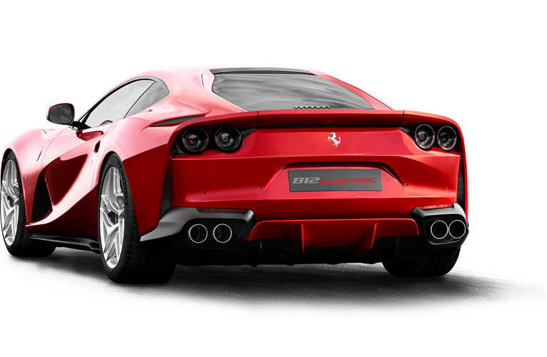
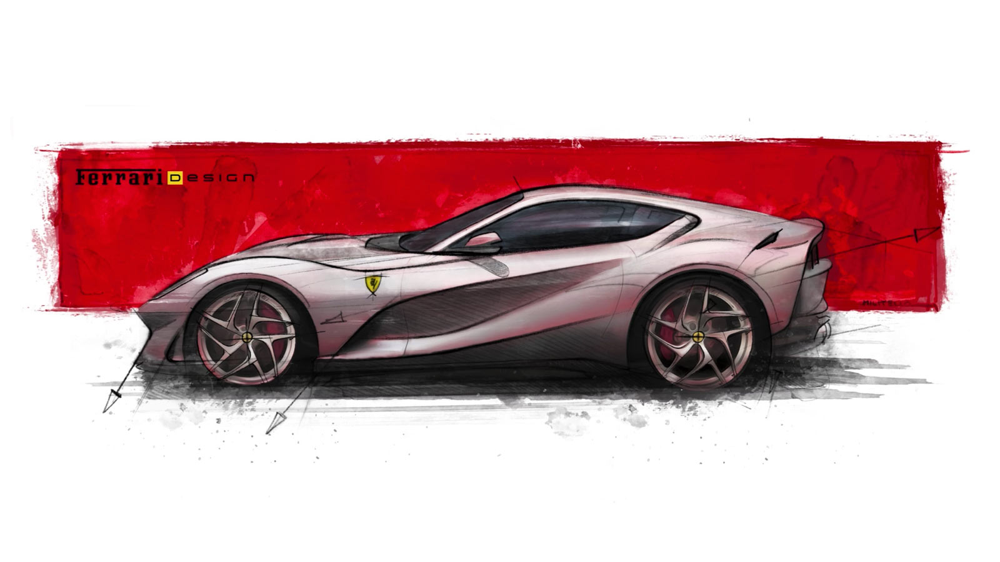
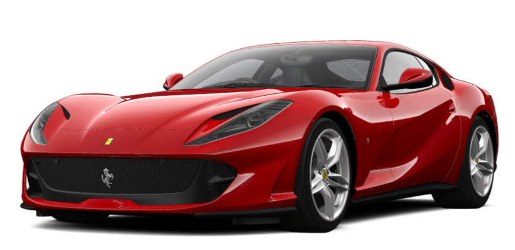
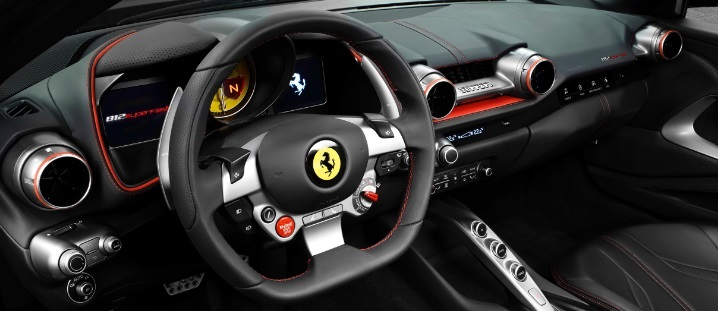

OVERVIEW
THE
FASTEST AND MOST
POWERFUL FERRARI
YET

THE FIRST AND MOST DIFFICULT CHALLENGE
FERRARI ALWAYS FACES WHEN IT DECIDES TO
DEVELOP A NEW MODEL IS TO PUSH THE
BOUNDARIES OF ITS OWN ACHIEVEMENTS YET
AGAIN.
This challenge is made all
the tougher when the task at hand involves designing
a new 12-cylinder engine, the power
unit that hailed the start of the
glorious Prancing Horse story 70 years
ago in 1947.
On this occasion, intensive research and
development focused on exploiting
Ferrari’s wealth of track-derived
engineering know-how has produced the
812 Superfast, designed to offer its
drivers both benchmark performance
across the board and the most riveting
and rewarding driving experience
possible.
DESIGN
About
REFINED, ESSENTIAL
AND
NEVER
EXCESSIVE
Designed by the Ferrari Styling
Centre, the new 812 Superfast
redefines the formal language of
front-engined V12 Ferrari
proportions without altering
either its exterior dimensions
or interior space and comfort.

EXTERIOR
POWER AND
AGGRESSION

Seen in silhouette, the 812
Superfast has a fastback
sleekness: a two-box design with
a high tail reminiscent of the
glorious 365 GTB4 (Daytona) of
1969, visually lowering an
aggressive rear spoiler designed
to guarantee downforce.
The draped design of the flanks
visually shortens the tail and
is characterised by sharply
slanted crease lines and
impressively muscular
wheelarches that imbue the 812
Superfast with the power and
aggression.
INTERIOR
LIGHT COMPACT
VOLUMES

The cabin has been radically
redesigned to imbue it with
an even sportier character.
Light, compact volumes hug the
contours of the interior
structures to the extent that
the latter are visible in
certain areas.
These ultra-taut surfaces are
deliberately layered and broken
up to create voids with the
result that the main elements
seem to float. The overall
effect is of both thoroughbred
racing eagerness and lean
elegance that never feels
overstated.
The horizontal dash loops
stylishly around the central
air vents for a sophisticated,
sculptural, yet supremely stylish
look that is also a nod to the
LaFerrari’s cockpit.
PERFORMANCE
| Max speed |
340 km/h(205 mph) |
| 0-100 km/h |
2.9s |
| 0-200 km/h |
7.9s |
| 100-0 km/h |
32 |
| Dry weight/power |
1.9 kg |
More information on
www.ferrari.com